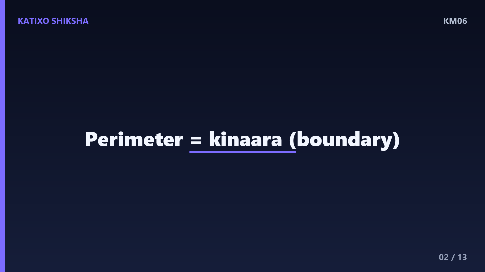
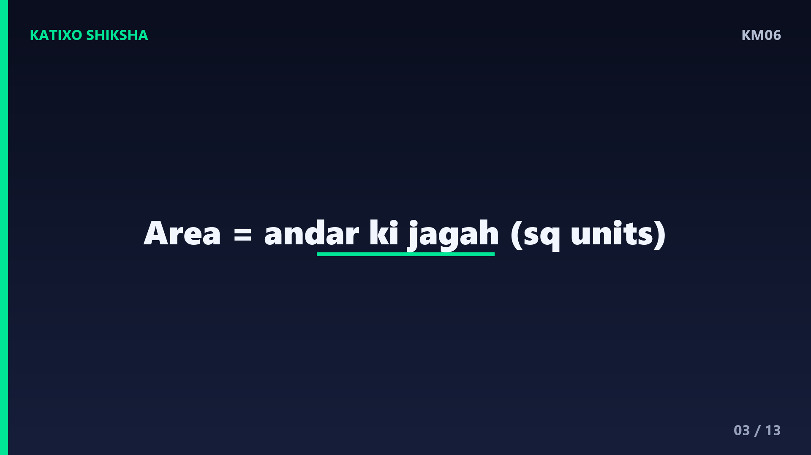
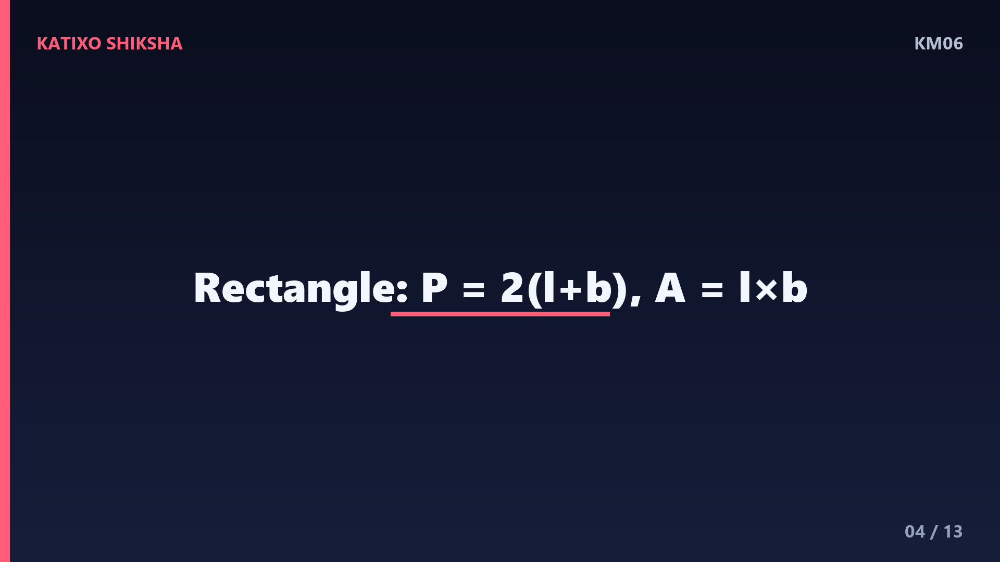
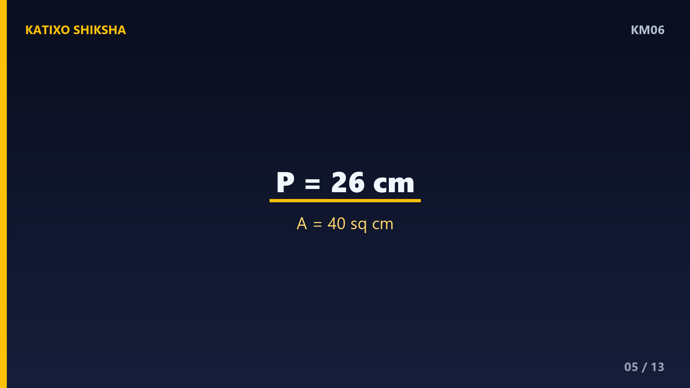
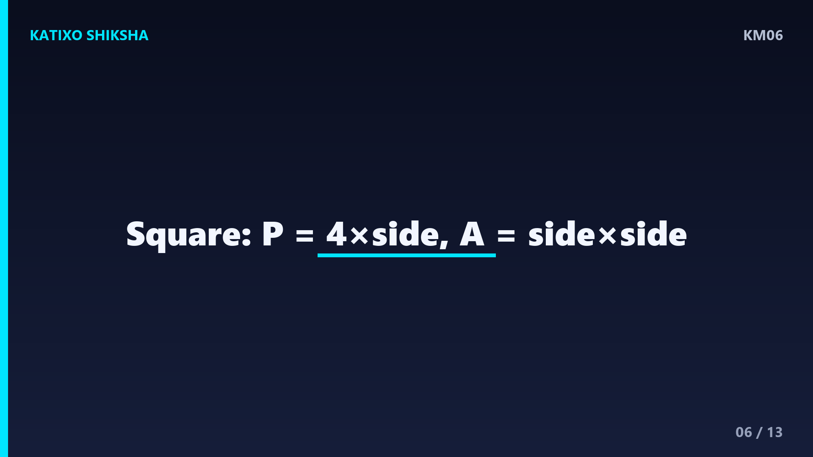
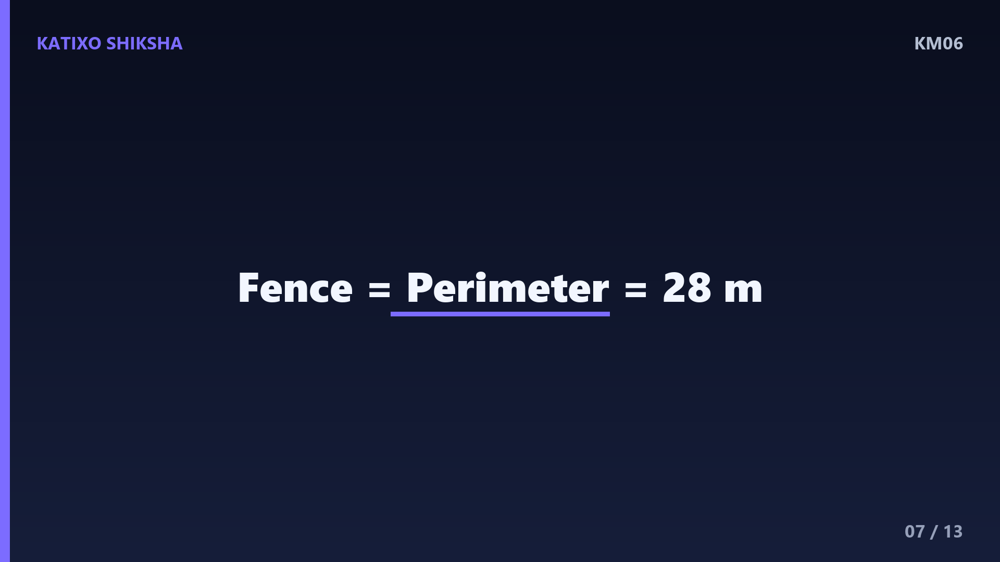
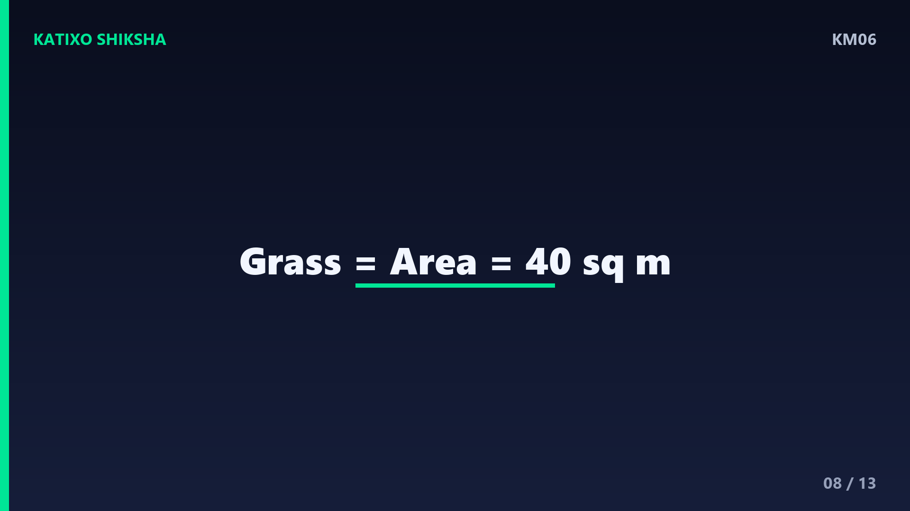
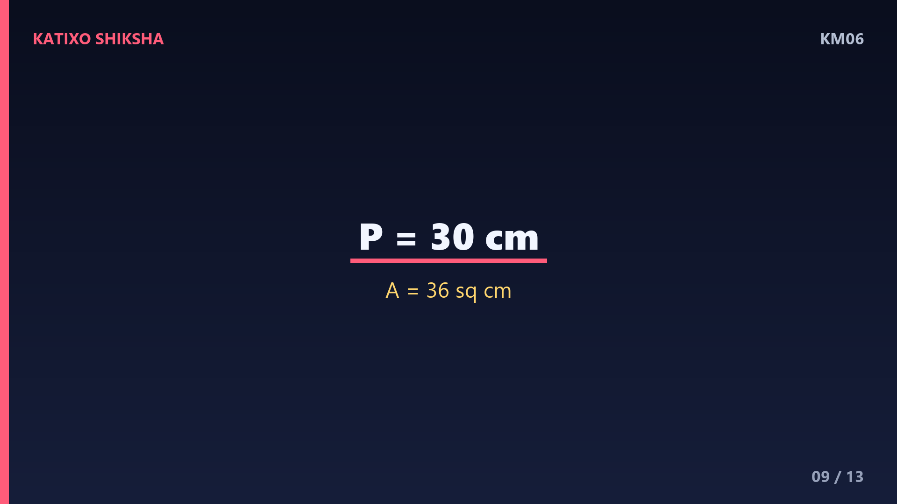
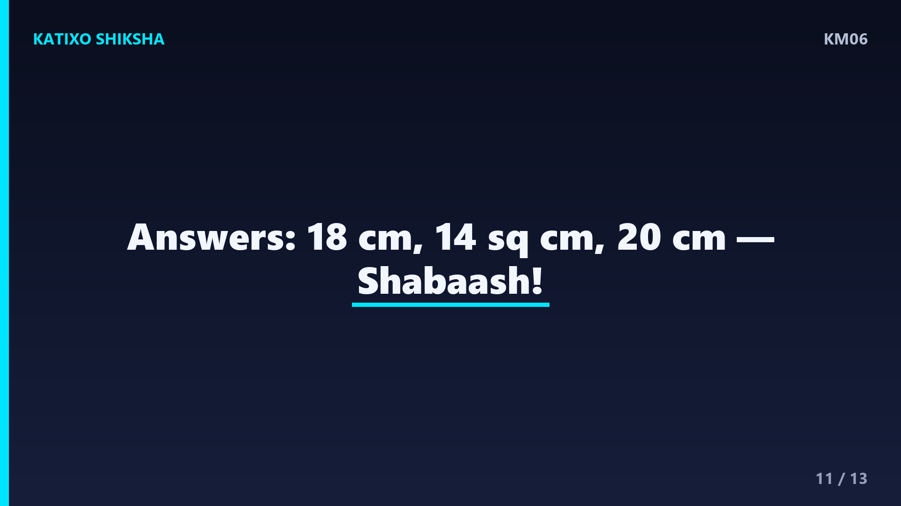

KM06 — Area aur Perimeter kya hota hai, ekdum aasaan?
Slide 1Namaste बच्चों! Katixo KhojLab me तुम्हारा फिर से स्वागत है! आज हम सीखेंगे दो मज़ेदार शब्द: Area aur Perimeter. सोचो तुम्हारे घर का एक कमरा है. उसके चारों ओर दीवार कितनी लंबी है, और फर्श पर कितनी टाइल लगेंगी? बस यही तो Area aur Perimeter बताते हैं! एक बताता है किनारा कितना लंबा, दूसरा बताता है अंदर की जगह कितनी बड़ी. डरने की कोई बात नहीं, ये बहुत easy हैं. तो तैयार हो जाओ, चलो शुरू करते हैं!

Slide 2सबसे पहले समझो Perimeter. Perimeter ka matlab hai किसी आकृति के चारों किनारों की कुल लंबाई. इसे हिंदी में परिमाप कहते हैं. सोचो तुम एक बगीचे के चारों ओर एक चक्कर चलते हो, तो जितना तुम चले वही उसका Perimeter है! किसी भी shape के सब sides जोड़ दो, बस वही Perimeter हो गया. याद रखो, Perimeter हमेशा किनारे-किनारे चलने वाली दूरी है, अंदर की जगह नहीं. किनारा matlab perimeter, बच्चों!

Slide 3अब समझो Area. Area ka matlab hai किसी आकृति के अंदर की पूरी जगह. इसे हिंदी में क्षेत्रफल कहते हैं. सोचो तुम फर्श पर छोटी-छोटी square टाइलें बिछा रहे हो. कितनी टाइलें पूरी जगह भर देंगी, वही Area है! Area हम square units में नापते हैं, जैसे square centimetre या square metre. याद रखो, Perimeter किनारा है और Area अंदर भरी हुई जगह है. दोनों अलग चीज़ें हैं, इसे कभी मत भूलना!

Slide 4अब rectangle यानी आयत का जादू सीखो. Rectangle ka Perimeter निकालने का तरीका: 2 गुणा लंबाई जोड़ चौड़ाई. यानी 2 गुणा कोष्ठक में length plus breadth. Rectangle ka Area निकालने का तरीका: length गुणा breadth. बस दो सूत्र याद कर लो! Perimeter के लिए जोड़ का दुगना, Area के लिए सीधा गुणा. ये दो formula तुम्हें बहुत आगे तक काम आएँगे, बच्चों, इन्हें अच्छे से याद कर लो!

Slide 5चलो एक worked example करते हैं. एक rectangle है जिसकी length 8 cm aur breadth 5 cm है. पहले Perimeter निकालते हैं: 2 गुणा कोष्ठक में 8 plus 5, यानी 2 गुणा 13, बराबर 26 cm! अब Area निकालते हैं: length गुणा breadth, यानी 8 गुणा 5, बराबर 40 square cm! देखा बच्चों, कितना आसान था? Perimeter 26 cm aur Area 40 square cm. बस formula में numbers रखो और हल कर लो!

Slide 6अब square यानी वर्ग सीखते हैं. Square me सब sides बराबर होती हैं, चारों एक जैसी! इसलिए Square ka Perimeter hai: 4 गुणा एक side. Aur Square ka Area hai: side गुणा side, यानी side का square. बहुत आसान! मान लो एक square की side 6 cm है. Perimeter: 4 गुणा 6, बराबर 24 cm. Area: 6 गुणा 6, बराबर 36 square cm. Square में बस एक ही number से सब हो जाता है, मज़ेदार है ना?

Slide 7अब एक मज़ेदार रोज़ की कहानी. सोचो तुम्हारे बगीचे की length 10 metre aur breadth 4 metre है. तुम्हें बगीचे के चारों ओर बाड़ यानी fence लगानी है. कितनी लंबी fence चाहिए? यह Perimeter का सवाल है! 2 गुणा कोष्ठक में 10 plus 4, यानी 2 गुणा 14, बराबर 28 metre fence! Fence हमेशा किनारे पर लगती है, इसलिए हम Perimeter निकालते हैं. देखो बच्चों, math रोज़ की ज़िंदगी में कितना काम आता है!

Slide 8अब Area की रोज़ की कहानी. वही बगीचा, length 10 metre aur breadth 4 metre. तुम्हें पूरे बगीचे में घास यानी grass लगानी है. कितनी जगह घास से भरेगी? यह Area का सवाल है! length गुणा breadth, यानी 10 गुणा 4, बराबर 40 square metre घास! जब भी पूरी जगह भरनी हो, जैसे घास, टाइल या रंग, तब Area निकालते हैं. किनारे के लिए Perimeter, अंदर के लिए Area, याद रखना!

Slide 9एक और example करते हैं ताकि पक्का हो जाए. एक rectangle की length 12 cm aur breadth 3 cm है. Perimeter: 2 गुणा कोष्ठक में 12 plus 3, यानी 2 गुणा 15, बराबर 30 cm! Area: 12 गुणा 3, बराबर 36 square cm! एक मज़ेदार बात ध्यान दो बच्चों: Area हमेशा square units में आता है क्योंकि वो जगह नापता है, और Perimeter सीधी units में क्योंकि वो लंबाई नापता है. यह छोटा फर्क हमेशा याद रखना!
Slide 10अब समय है तुम्हारी बारी! Chalo try karein! तीन सवाल हैं, video रोको aur copy me हल करो. पहला: एक rectangle की length 7 cm aur breadth 2 cm है, उसका Perimeter kya hai? दूसरा: उसी rectangle ka Area kya hai? तीसरा: एक square की side 5 cm है, उसका Perimeter kya hai? जल्दबाज़ी मत करना, formula ध्यान से लगाना. हो गया? शाबाश! अब अगली slide पर answers देखते हैं!

Slide 11चलो answers मिलाते हैं! पहला: Perimeter बराबर 2 गुणा कोष्ठक में 7 plus 2, यानी 2 गुणा 9, बराबर 18 cm! दूसरा: Area बराबर 7 गुणा 2, बराबर 14 square cm! तीसरा: square ka Perimeter बराबर 4 गुणा 5, बराबर 20 cm! कितने सही हुए बच्चों? अगर सब सही हुए तो शाबाश, और अगर कोई गलत हुआ तो कोई बात नहीं, फिर से कोशिश करो. Practice से ही सब आता है!
Slide 12चलो अब पूरा recap करते हैं! Perimeter matlab किनारों की कुल लंबाई, यानी परिमाप, जो fence जैसी चीज़ों में काम आता है. Area matlab अंदर की पूरी जगह, यानी क्षेत्रफल, जो घास या टाइल जैसी चीज़ों में काम आता है. Rectangle ka Perimeter: 2 गुणा length plus breadth. Rectangle ka Area: length गुणा breadth. Square me सब sides बराबर, तो Perimeter 4 गुणा side aur Area side का square. बस इतना याद रखो!
Slide 13शाबाश बच्चों! आज तुमने Area aur Perimeter दोनों सीख लिए, ekdum aasaan tarike se! अब अगली बार जब कमरे, बगीचे या किताब को देखो, तो सोचना उसका Area aur Perimeter कितना होगा. रोज़ थोड़ी-थोड़ी practice करते रहना. अगर मज़ा आया तो Katixo KhojLab subscribe karo, like करो aur bell दबाओ ताकि हर नया मज़ेदार lesson सबसे पहले तुम तक पहुँचे! तब तक सीखते रहो, मुस्कुराते रहो. Shabaash, milte hain agle episode me!